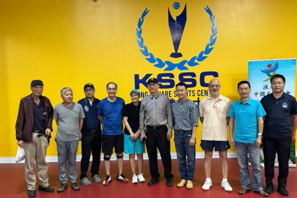
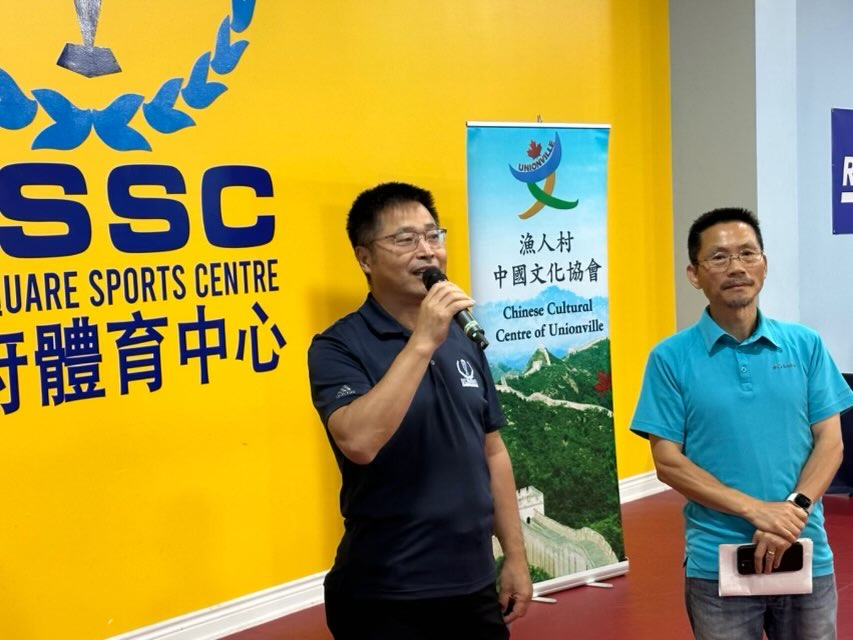

2024年8月7日下午，渔人村中国文化协会在王府井购物商场二楼的王府体育中心，首次举办市民社区安全现状交谈会（渔人村中国文化协会秘书处 ） 【2024年08月09日讯】（多伦多讯）2024年8月7日下午，渔人村中国文化协会在位于万锦市西区的王府井购物商场二楼的王府体育中心，首次举办市民社区安全现状交谈会。据约克区警局（YRP）通报，万锦市上周二（7月30日）下午3：45发生一起劫车案，案发地点为华人最常去的Markville Mall。受害人在往车里装物品时，两名男性嫌疑人向其靠近。这两名嫌疑人是从第三名嫌疑人驾驶的一辆白色Nissan Rouge SUV下车。嫌疑人索要车钥匙，并驾驶受害人的白色奔驰G-Wagon SUV逃离。
约克区警局当日紧急派出直升机Air2协助调查，并在旺市Durfferin Street和Clark Avenue地区一个Plaza找到受害人的奔驰车。当天下午6点左右，警方在附近一个树林找到两名躲藏的男子，并将他们抓获归案。
根据约克区警局8月2日的新闻发布，三名嫌疑人分别是20岁的Jamar Wilson，31岁的Anthony Stoner和32岁的Jahmyle Johnson，三人都是多伦多居民，他们面对多项指控。警方还透露，其中两人Stoner和Johnson在犯案时，处于保释期，两人各被控违反保释令。
约克区最近罪案频频发生。另据约克区警方8月1日的新闻发布，确认一位万锦女性华人中医师，大白天在自己位于万锦市工业区的诊所被害。周一（7月29日）发现的遗骸经警方确认是自7月25日起失踪的万锦华人女子，并已对嫌疑人的指控升级为二级谋杀。
市民对这样的社区安全事件非常担忧。到场参加的市民主要来自万锦市及周边地区。协会主席及本次市民交谈会发起人蒋嘉勤首先发言并介绍本次交流的宗旨。他说，自从几年前开始陆续听到邻居的车在自己的车道上，半夜被偷走；饭店商家半夜被砸门入室的盗贼偷走收银机里的现金及电脑设备；到今年盗贼干脆白天在停车场直接把车主锁定后用刀枪逼下车。今天上午又传来消息，在太古广场，昨天（8月6日）下午，一家珠宝店遭“洗劫”，大约3-4名劫匪砸碎橱窗进店扫荡，抢走了数量不明的珠宝，随后逃离了现场。这是同一家华人珠宝店近年来第三次被抢。
“我们居住的万锦市显然被罪犯们盯上，作为主要作案目标了。”他说。
万锦市民Kevin Chi在发言中表示，“自从2011年搬来万锦市位于 Warden 和16街，本来非常安全悠闲的小区居住以来，我发现已经有邻居的Lexus RX SUV 被盗几次，社区安全越来越令人担忧。尤其是2015年杜鲁多政府执政以来，偷盗事件与放进大量未经背景调查的难民直接成了正比，政府需要立即审视现有的刑法条例，应该多为加拿大居民的社区安全考虑后，再制定移民与难民政策。我们需要让真正愿意为民服务的政党去领导这个国家，明年大选我们应该知道如何选择了。”

接着发言的是居住在万锦市20多年的George。他说：“我的邻居车子屡次被偷，都是半夜从自己车道上被盗走的。我认为近几年来联邦政府接受的各类难民中，有太多没有通过严格的筛选与审核，现在过于宽松离谱的保释条例给有罪的涉案人员提供了可乘之机，长期这样下去，安静祥和的万锦社区将一去不复返。我希望加拿大引进更多真正热爱加拿大、来到这里勤奋学习的国际留学生及移民，为加拿大经济发展做贡献。”
在繁忙的社区服务及工作之余赶来现场发言的，还有具香港移民背景的郑敬基。他说：“我是1985年从多伦多大学毕业的早期移民，开始工作后一直居住在万锦市，因为这里是我们华人喜欢的购物休闲美食多多的好城市，也是适合养儿育女的好区，我从康山一直搬到目前万锦北区，所以一直是万锦市民。我想告诉大家的是：我专门为今天出席的各位挖掘出了目前联邦政府有关刑法的规条。各位是否知道在2018年3月29日推出制定的C-75法案，即修订刑法、青少年刑事司法法案，并对其他法案作出相应修订的法案。此法案以改革刑事司法体系的名义，去解决自由党政府眼中的监狱制度，实际上是任何被治罪的案犯，可以不交任何费用来获得保释，而不是各位认为的3000元或者至少1000元上下的保释金。另外本届自由党政府还在2022年11月7日通过了C-5 法案，即《修订刑法和管制药物与物品法案 》，这个法案干脆撤销了前保守党总理哈珀执政时通过的罪行法案，结果是将严重罪行的法定最低刑罚（主要包括枪支和毒品等重罪），由此前的最低三年牢狱修改为可能一天牢也不用坐了，可直接回家。这些有前科的涉案人员，就像最近几天这样轻易回到你我安居乐业的社区重新犯罪。我今天呼吁大家擦亮眼睛，在明年即将到来的联邦大选时，把选票投给承诺把重罪犯人投进监狱不得保释的保守党，让毒品治疗屋远离社区学校和商场的保守党。我们现任区内的国会议员就跟橡皮图章一样，再不作为明年必须面临下课。”
王府体育中心的Mark Bu 作为万锦市民，也接过麦克发言：“我们王府体育馆自开业以来，为万锦及周边市民提供一个包含乒乓球、羽毛球、皮克球、篮球等体育活动场所，欢迎大家常来这里打球会友。我作为万锦的老市民，当然也对日益升级的各类社区入室偷盗以及盗车抢车事件十分担忧，我也要呼吁现任的联邦政府，立刻修改刑事法，不要让罪犯轻易获得保释。只有社区安全了，我们的邻居朋友才安心去上班购物，才敢更放心地出来约上朋友一起娱乐打球。感谢你们的努力呼吁。”
现场打乒乓球的很多粤语球友们停下球拍，鼓掌为发言的市民们叫好，不少球友停下来与大家互动交流，并在结束的时候与组织本活动的义工们合影留念。
责任编辑：周行